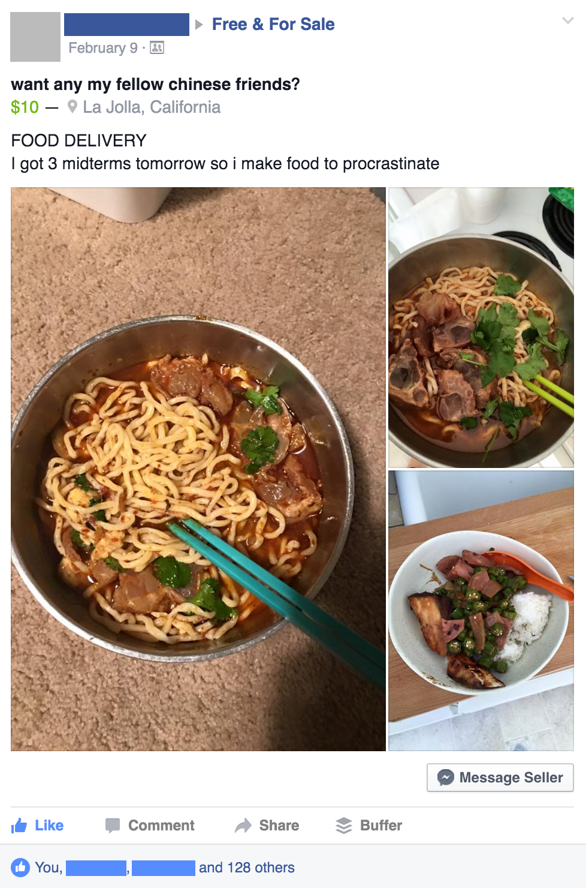
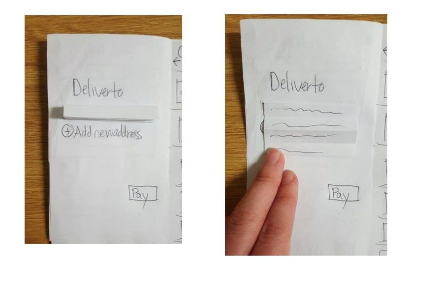

Introduction.
I recently took a Human-Computer Interaction Design course with Scott Klemmer, where I worked with two other students to design a fully functional mobile web app over 10 weeks. Our final product is Palit, an app aiming to solve many college students' bad eating habits by providing a crowd sourced solution for finding food near you.
Each week we had a major goal to accomplish, and we created a development plan for our team to follow to keep pace with our design goals. This was done in an attempt to have our project simulate real development cycles.
Brainstorming.
The first week of class, we picked our 'studio sessions,' each of which had a unique prompt and would decide which groups we would be working with for the remainder of the project. I signed up for the studio 'Exchange,' which was all about collaborative consumption and how we could facilitate such interactions by supplementing them with mobile applications. Our first assignment was to find sources of inspiration, and to brainstorm ideas for what type of exchange you would like to help improve.
The crowdsourcing space has really blown up over the past few years, so there was plenty to draw inspiration from. Uber and AirBNB are both unicorns worth noting for their incredibly successful attempts at creating a sharing economy in their given fields. Reading into their history and looking through many professional analyses of their rise to success, I quickly found myself researching network effects. AirBNB was a great example of a company that struggled with scaling because of lack of trust established with the app. From talking to their users, they were able to find that bringing better pictures of spaces available for rent made buyers trust the service more. Uber also highly depended on trust; a lot of their scaling relied on being seen as a 'black label' luxury service that established a good reputation.
I soon found myself thinking about many ways in which I could apply different domains to the topic of 'exchange.' Eventually I thought of how I could crowd source food. The other day I made way too much pasta, figuring someone in my apartment would want the leftovers... No takers. But what if I could expand the scope of who I was able to offer my leftovers to? Many people would probably appreciate a home cooked meal. I figured this was a good place to start poking around, and I continued with the idea.
I did a bit more research on similar apps. Yelp and Postmates both quickly came to mind. Yelp didn't exactly crowd source food, but it crowd sourced the reviews. Again, I quickly saw that establishing trust was huge; I've actually gotten to the point where I trust Yelp so much I will choose where to eat solely on what the app says.
Postmates seemed a lot closer to something I might be trying to attempt. I asked many people I knew about what they thought of Postmates, and how they used it. Most people loved it, with the two major gripes that it was expensive and often had very long waits. Both of those problems would be improved by allowing everyone (not just businesses) to sell food. Things would be cheaper, and the increase in local sellers would make nearby options much faster to access. This distributed power could cause raised concern over whether the food could be trusted though; much like the situation with early AirBNB, why would I trust food from the internet?
Our team talked it over, and despite the challenges we foresaw, we wanted to run with it.
Needfinding.
Without even having to search for people that we wanted to question about our idea, we ran into a few people that were already looking for something that satisfied such a need.
This person wasn't alone - a lot of people tried selling food on the college free and for sale page. We talked to some of these people who were trying to sell their food, and we also talked to some of the people that were willing to buy the food.
For the sellers, two things really stood out. Most of them either wanted to make a bit of extra money (but not a ton,) or they had a strong love for cooking and wanted to share it somehow. In a few cases, both were true.
For the buyers, the issue of trusting the seller that we had predicted wasn't much of an issue. It seemed that college students were more used to 'sketchy' options, or their own poor attempts at cooking were enough to convince them to try something new. What little trust they needed was satisfied by the fact that a peer at the same university was selling food, which gives the illusion of knowing the seller. When asked about why they chose that specific seller, most people claimed it was something they really liked, and often reminded them of home, but that they couldn't access easily on a college campus.
With this knowledge as our basis, we interviewed 3 students, creating list of user needs based on our interviews. Our collective findings became the foundation for our upcoming prototype.
Prototyping.
 We spent the next few weeks of the course moving from a paper prototype that we tested with our users, to an Invision clickable mockup, to a minimal coded prototype on Heroku. Every step of the way, we made sure to collect lots of feedback, documenting everything we could. We had tons of micro-iterations, and learned a lot about what our users were really looking for, and what worked best for them.
A huge helpful exercise was verbally walking through tasks in our app every week in class. Between hearing myself talk, and having the large group keep the team accountable for logical jumps in my explanation, it was a lot easier to see spots where our users could go wrong.
Heuristic (re)evaluation.
Despite the fact that we were constantly keeping pace with our user feedback, we took some time to critique ourselves with Nielsen's Ten Heuristics.
This was a good chance to really hone in on some problems that our users were putting up with up to this point. The biggest issues were "Visibility of system status" since it wasn't always apparent how many nested menus you were into the application (and how far you had to go back), as well as "Consistency and standards" from having various button layouts. The consistency was more because this was still a prototype and we weren't always using the best practices to code in parallel, but nonetheless we made sure to fix it now that we had a moment to think about it as a larger issue.
A/B Testing.
Although we had been getting feedback from users and watched peopel interact with our platform, we didn't actually have analytical data on how the app was being used up to this point. It was time to change that.
We spent a solid chunk of time implementing Google Analytics, and having various versions of the app pushed out to certain users. We mainly tested button layouts, as some people were having trouble quickly finding how to add a new entry.
Ultimately, while everyone seemed to find the button they were looking for, a specific layout was about 0.6 seconds faster on average, so we went with that layout.
Finishing Touches.
As we were closing in on the end, it was time to give it a complete feel, and establish a sense of branding and trust with our app. We gave the last bit of time a lot of attention to small details like color, animation, and smoothing out features that users engaged with most. By the time we had to demo, I felt like (although far from perfect) we had something I was proud of showing off as our own.
Pitchfest + Finale.
As the course came to an end, our final piece was participating in an expo and demoing our app.I designed a posterboard for our team that we used during the expo.
 The prototype is available to view online, but is best viewed on mobile, as the course specifically required a mobile web app.
The prototype is available to view online, but is best viewed on mobile, as the course specifically required a mobile web app.
Conclusion.
Klemmer's course was by far one of my favorite at UCSD. I learned so much, and really felt like I developed my skillset by taking the course. Designing a product from scratch is a large amount of work, even for something so simple. Nonetheless, I loved working with product design and hope pursue it as a part of my career.
Shoutout to Joanna and Jackson, who were both such amazing people to work with!